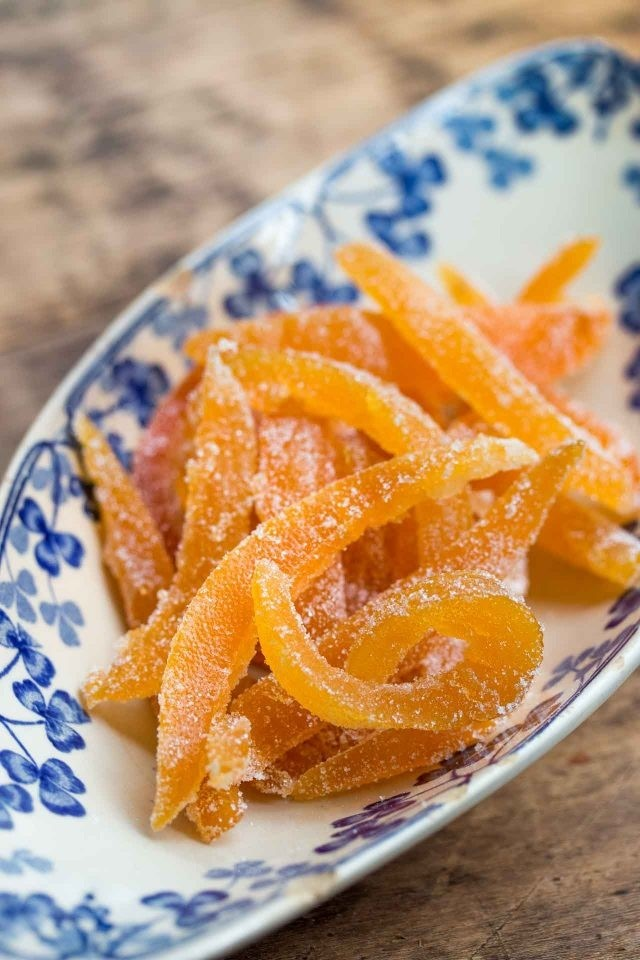

Candied Citrus Peel
Ingredients
• Ctrus peels
• Sugar
• Water
Directions
1. Slice peels into thin strips (about ¼” wide).
2. In a medium pot of boiling water, cook peel until tender, about 10 minutes.
3. Transfer peels to a wire rack and set in a single layer to dry slightly, about 15 minutes.
4. In a medium saucepan bring about ½-1 cup sugar and 1 cup of water to a boil over high heat, stirring to dissolve sugar. Add peel and boil until it turns translucent and syrup thickens, 8-10 minutes.
5. Transfer to wire rack, separating pieces as needed. Let dry for about an hour, then fnish by tossing peel in a bit of sugar to coat.
